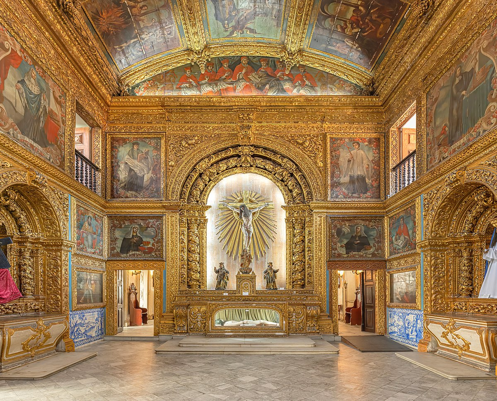

Capela Dourada
Uma das igrejas mais bonitas da capital, a Capela Dourada guarda muito da ostentação e da riqueza do Brasil colonial, com muitos detalhes em ouro, madeiras trabalhadas e pinturas sacras. Na verdade, a capela fica dentro do Convento e da Igreja de Santo Antônio, onde também está o Museu de Arte Sacra.
Oficina de Cerâmica Francisco Brennand

Um passeio altamente recomendado é uma visita até a Oficina de Cerâmica Francisco Brennand, que pertence ao próprio artista. O local foi transformado por ele em um museu a céu aberto, tem espaços para a exposição de suas obras e é a oficina de produção de uma das melhores cerâmicas do país.